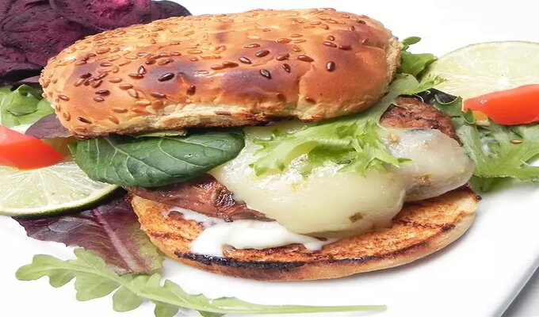

Turkey Chorizo Burger

It attacks your taste buds! Spicy chorizo-style sausage and lean ground turkey combine to make a kick-butt burger that's full of taste but won't leave you feeling stuffed.
This burger could also be grilled outdoors for a smokier flavor. Goes great with a michel ada or frozen margarita.
Ingredients:
- 1 pound lean ground turkey
- 4 links Mexican chorizo sausage, casings removed
- 4 cloves garlic, minced
- ¼ teaspoon onion powder
- ¼ teaspoon chipotle chile flakes
- 1 pinch ground black pepper
- 2 tablespoons buttery spread
- 4 slices pepperjack cheese
- 4 hamburger buns
- ¼ cup mayonnaise, divided
- 2 cups spring mix lettuce, divided
- 1 lime, juiced
Steps:
- Combine ground turkey, chorizo, garlic, onion powder, chipotle flakes, and black pepper in a large bowl;
mix with your hands until well-blended. Shape into 4 loosely-packed patties.
- Heat a griddle or large skillet over medium heat until hot; grease with buttery spread. Place patties on the griddle;
cook until browned, about 3 minutes. Reduce heat to medium-low; continue cooking for about 5 minutes.
Flip patties and cook until browned on the second side, about 6 minutes.
- Top each patty with a slice of pepperjack cheese. Cook until cheese is melted, about 1 minute more.
- Toast hamburger buns in a toaster oven. Spread 1 1/2 teaspoon mayonnaise over each half. Place cooked patties over bottom buns.
Top each patty with 1/2 cup spring mix lettuce. Sprinkle lime juice over lettuce. Cover with top buns.